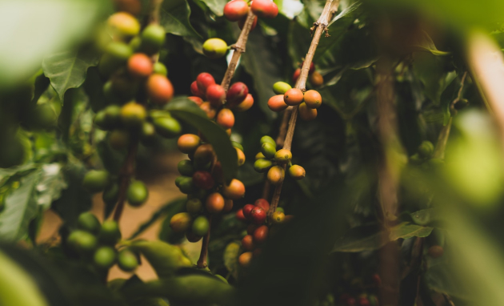
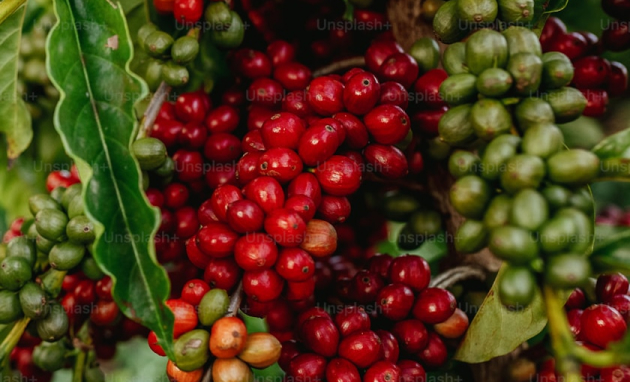

브랜드지원
뭉치페어링 플랜트
(Moongchi Pairing Plant)
뭉치페어링 플랜트에서 커피와 디저트가 선사하는 특별한 순간을 느껴보세요!
뭉치카페는 단순히 음료를 제공하는 것을 넘어, 고객님들의 미각을 더 풍부하게 만들기 위해 고민합니다.
뭉치페어링 플랜트는 음료와 디저트의 완벽한 조화를 제안하는 특별한 공간입니다.
- 
- 
완벽한 맛의 조화
뭉치페어링 플랜트는 음료와 디저트의 완벽한 밸런스를 연구합니다. 각 메뉴의 풍미를 최대한 살려, 고객님께 새로운 미식 경험을 제공합니다. 서로 다른 맛이 만나 이루는 조화를 직접 느껴보세요.
세심한 메뉴 추천
당신의 취향에 딱 맞는 음료와 디저트를 추천해드립니다. 전문가의 손길로 만들어진 메뉴들은 서로를 돋보이게 하는 완벽한 페어링을 자랑합니다. 뭉치카페만의 독창적인 제안을 경험하세요.
언제나 새롭고 특별하게
뭉치페어링 플랜트는 매 시즌마다 새로운 페어링 메뉴를 선보입니다. 계절의 색깔을 담은 특별한 조합으로, 매번 새로운 맛을 느끼실 수 있습니다.일상의 순간이 특별해지는 페어링을 만나보세요.
고객과 함께하는 미식 여정
단순한 추천을 넘어, 고객님의 의견을 반영한 메뉴를 구성합니다. 뭉치페어링 플랜트는 고객과 함께 성장하며, 더 나은 맛을 찾아갑니다. 음료와 디저트를 둘러싼 소통의 장에 초대합니다.
뭉치카페의 정성을 담다
뭉치페어링 플랜트는 단순한 조합이 아닌, 정성과 창의성을 담아냅니다. 고객님의 미소를 생각하며 만든 메뉴는 단순한 한 끼 이상의 의미를 제공합니다. 뭉치카페에서만 느낄 수 있는 따뜻함과 특별함을 만나보세요.